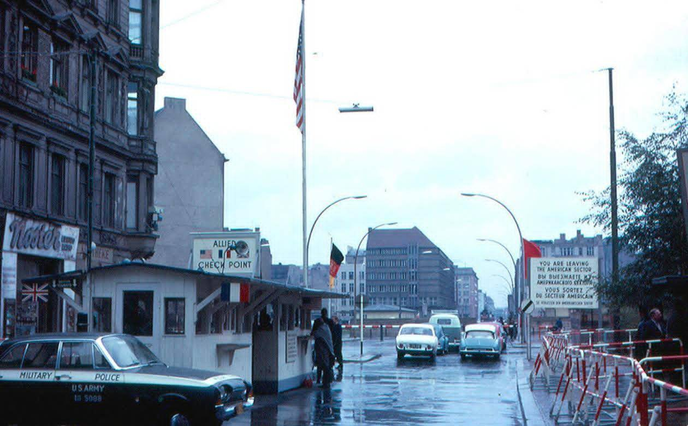

ด่านตรวจชาร์ลี (Checkpoint Charlie) ในกรุงเบอร์ลิน เป็นจุดผ่านแดนสำคัญในยุคสงครามเย็นระหว่างเบอร์ลินตะวันออกและตะวันตก ปัจจุบันเป็นสถานที่ท่องเที่ยวยอดนิยมที่แสดงป้อมยามจำลอง, นิทรรศการกลางแจ้งเกี่ยวกับประวัติศาสตร์การหลบหนี, ถ่ายรูปกับหุ่นจำลองทหาร, และอยู่ใกล้กับพิพิธภัณฑ์กำแพงเบอร์ลิน (Mauermuseum)
จุดท่องเที่ยวและกิจกรรมไฮไลท์:
ป้อมยามจำลอง (Checkpoint Booth): ถ่ายภาพคู่กับป้อมยามสีขาวที่เป็นสัญลักษณ์ (จำลองขึ้น) และหุ่นจำลองทหาร (Actor)
นิทรรศการกลางแจ้ง (Open-air Exhibition): นิทรรศการบริเวณหัวมุมถนน Friedrichstraße และ Zimmerstraße บอกเล่าเรื่องราวความพยายามหลบหนีและภาพถ่ายในอดีต
พิพิธภัณฑ์กำแพงเบอร์ลิน (Mauermuseum - Museum Haus am Checkpoint Charlie): อยู่ใกล้กัน จัดแสดงอุปกรณ์ต่างๆ ที่ใช้ในการหลบหนีจริง เช่น รถยนต์, บอลลูนลมร้อน
ซากกำแพงเบอร์ลิน: มีส่วนที่ยังหลงเหลืออยู่ให้ชมใกล้ๆ บริเวณจุดตรวจ
ข้อมูลการท่องเที่ยว:
ที่ตั้ง: ถนน Friedrichstraße 43-45, เบอร์ลิน
การเดินทาง: สถานีรถไฟใต้ดิน (U-Bahn) สาย U6 ลงสถานี U Kochstraße/Checkpoint Charlie แล้วเดินต่ออีกเล็กน้อย
เวลาทำการ: เปิดทุกวัน ตั้งแต่ 9.00 - 22.00 น.
คำแนะนำ: ช่วงเช้า (9.00 - 11.00 น.) หรือช่วงเย็นคนจะน้อยกว่าช่วงกลางวัน